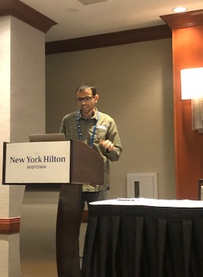

I'm a PhD student with the
Language Technologies Institute
at CMU,
where I am advised by Prof. Eduard Hovy. My research is broadly on language generation, with specific interests in style transfer, data-to-text generation, narrative generation and low-resource & creative generation.

As a natural development of my interest in low-resource & creative generation, I became increasingly piqued about data augmentation (DA), first specifically for generation, and then in general, leading to several fruitful research directions:
- Devising lightweight DA strategies to finetune conditional generators like GPT-2.
- Augmenting reference sets for dialog generation, improving evaluation via automatic metrics like BLEU for no added cost.
- A comprehensive survey on recent DA methods in NLP - we also try sensitizing the NLP community about lacunae, e.g w.r.t CV research and outline future challenges. We maintain a live git repo and arXiv - send us a PR to add your method onto both!
- DA for improving commonsense plausibility and fluency of Concept-to-Text Generation by:
- Example-level augmentation strategies like knowledge-guided side-information and 'self-introspection' (🏆 Best Long Paper @ INLG 2021)
- Indirectly grounding through the visual modality via captions of retrieved images.
Corollary of my interest in narrative generation, some of my work circa 2020 investigated probing extra-sentential abilities of contextual representations, such as locating event arguments and infilling whole sentences a.k.a ``sentence cloze".
In the past few years, I have also been involved in co-organizing many collaborative NLP research efforts, such as:
- The Controllable Generative Modelling in Language and Vision Workshop (CtrlGen) at NEURIPS'21, which aimed to explore controllability, disentanglement and manipulation for language and vision tasks. We solicited submissions for Papers as well as Demos. Checkout the proceedings page for talk vids, slides, accepted paper info and more.
- The GEM benchmark, associated workshop@ACL'21, and paper for better and standardized evaluation and comparison of NLG models and systems - a parallel to GLUE for generation
- The challenge sets submodule of GEM, where we built domain-shifted sets under a unified theme for NLG tasks in our benchmark, using various perturbation [backtranslation], sub-selection [length] and other domain shift [diachronic] strategies. Our work was accepted @
NEURIPS'21 Datasets & Benchmarks Track!
- The NL-Augmenter participative repository and benchmark, which provides a structure for NLPers to contribute and evaluate task-specific data augmentations a.k.a transformations, as well as subset selection strategies a.k.a filters. We aim to create a large, usable suite (~140 and counting!) of transformations and filters leveraging wisdom-of-the-crowd - opening the door to more systematic analysis and deployment of data augmentation/robustness evaluation.
Before CMU, I graduated with a Dual Degree (B.Tech+M.Tech) in Computer Science and Engineering
from IIT Madras in 2016. For my thesis, I was advised by Prof. Ravindran and Ramasuri Narayanam from IBM Research, working on Social Network Analysis problems related to unconventional social networks such as centrality measures for signed networks, influence maximization for hypergraphs and multiplex graphs to model citation networks
For an overview of my published research and preprints, check out my Google Scholar profile.
Email /
CV (Nov 2021) /
Research Statement (Nov 2021) /
Thesis Proposal (Mar 2022) /
Google Scholar /
LinkedIn /
Twitter /
GitHub
|